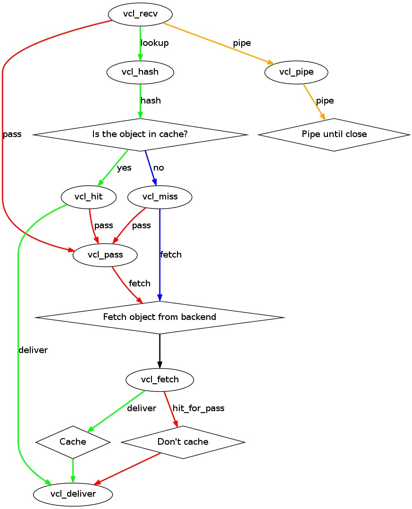
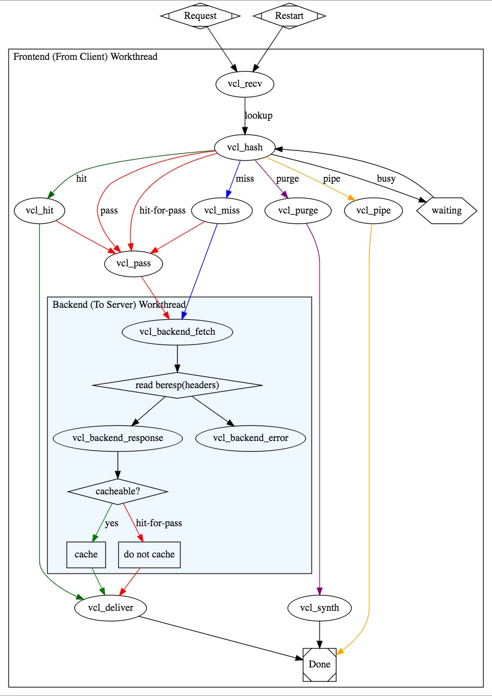

key: 对访问路径(URL)做hash计算value: Web Content
缓存命中率=hit/(hit+miss)
文档命中率: 从文档个数进行衡量字节命中率: 从内容大小进行衡量
缓存处理步骤: 接收请求 > 解析请求(提取请求的URL及各种首部) > 查询缓存 > 新鲜度检测 > 创建响应报文 > 发送响应 > 记录日志
LRU (最近最少使用)Expires: 过期日期 (绝对时间，可能会受时间不同步的影响)Cache-Control: max-age (相对时间)If-Modified-Since: 基于请求内容的时间戳作验证，最小精确到秒If-None-Match: 匹配文件特征码(Etag)，用于实时验证304 (Not Modified)200404 ，此时缓存中的缓存对象也应该被删除
http中使用 Cache-Control 的值来控制缓存
no-cache: 不要返回缓存的对象max-age: 只接受age值小于该值的对象min-fresh: 可接受距离过期的时间大于该值的对象max-stale: 可接受超出过期的时间小于该值的对象public: 可以缓存的公共信息private: 可以缓存的私有信息no-cache: 可以缓存，但每次使用需要验证有效性max-age: 对象的过期时间no-store: 不可缓存s-maxage: 作用于代理服务器上，使得代理服务器与用户客户端的缓存时间不相同varnishsquid
CDN (内容分发网络)本身是一个缓存服务器，同时当缓存内容未命中的时候，会路由至它最近的CDN去获取内容，从而减轻主服务器的压力
CDN需要有一个GSLB(全局负载均衡器)来安排路由
Acceptor: 接收新的连接请求worker threads: 处理用户请求Expiry: 清理缓存中的过期对象domain 的类C编程语言使用varnishd命令行进行主程序配置
varnishd [OPTIONS] -a address[:port],...: 监听端口(默认为6081) -T address[:port]: 管理端口(默认为127.0.0.1:6082) -u USER: 运行用户 -g GROUP: 运行组 -s type: 指定Varnish存储对象的方式 malloc[,size]: 全部缓存在内存，使用jemalloc库(并行版的malloc) file[,path,size]: key缓存在内存中，value缓存在单个文件中，重启时缓存会失效 persistent,path,size: 基于文件的持久存储，不稳定 -f config_file: 指定VCL配置文件 -S secret_file: 进入管理接口的认证密钥 -p param=value: 配置运行时参数 -r param[,param...]: 设定只读参数列表
CentOS下，命令行参数可以使用 /etc/varnish/varnish.params 文件进行配置
可在程序运行中用CLI配置运行时参数
varnishadm -S /etc/varnish/secret -T IP:PORT # 交互式管理varnish
thread_pools: 线程池个数(默认为2)thread_pool_max: 单线程池内允许启动的最多线程个数thread_pool_min: 单线程池内允许启动的最少线程个数thread_pool_timeout: 多于thread_pool_min的线程空闲此参数指定的时长后即被purge用于配置缓存系统的缓存机制，也可以在程序运行时生效(编译后使用)
各引擎之间存在一定程度上的相关性，前一个engine如果可以有多种下游engine，则上游engine需要用 return 指明要转移的下游engine
//, #, /* */ 用于注释sub $name{ }: 用于定义子例程if-else 判断语句，但不支持循环state engine 有密切相关性return(action)domain 空间=, ==, ~ (正则匹配), !, &&, ||, + (支持字符串相加)变量的赋值
set name=value unset name

vcl_recv > vcl_hash > vcl_hit > vcl_delivervcl_recv > vcl_hash > vcl_hit > vcl_pass > vcl_fetch > vcl_delivervcl_recv > vcl_hash > vcl_miss [ > vcl_pass ] > vcl_fetch > vcl_delivervcl_recv > vcl_pass > vcl_fetch > vcl_delivervcl_recv > vcl_pipevcl_error > vcl_deliver
vcl_purge > vcl_synth ，用于直接清除缓存对象，所对应的清除对象的 http method 是 PURGEvcl_fetch 分成了三步，用于检测回应报文是否有错误
vcl_backend_fetchvcl_backend_responsevcl_backend_error: 获取错误后的操作vcl_init ，可以用来定义后端负载均衡client.ip: 客户端IPserver.ipserver.hostnamereq.http.HEADER: 调用request报文中http协议的指定的HEADER首部
req.http.X-Forwarded-For: 转发IPreq.http.Auhtorization: 是否为用户私人信息req.http.cookiereq.request: 请求方法req.backend_hint: 设定目标服务器bereq.http.HEADER: 发往backend server的请求报文的首部bereq.request: 请求方法bereq.urlbereq.proto: 版本bereq.backend: 指明要调用的后端主机beresp.protoberesp.status: 后端服务器的响应的状态码beresp.reason: 原因短语beresp.backend.ipberesp.backend.nameberesp.http.HEADER: 从backend server响应的报文的首部beresp.ttl: 后端服务器响应的内容的余下的生存时长obj.ttl: 对象的 ttl 值obj.hits: 此对象从缓存中命中的次数backend websrv1 { .host = "172.16.100.68"; .port = "80"; .max_connections = ..; // 设定并发连接的最大数量 .probe = { // 对后端服务器进行健康状态检查 .url = "/test1.html"; // 所检查的请求URL .expected_response = 200; // 期望响应的状态码，默认为200 } } sub vcl_recv { if (req.url ~ "(?i)\.(jpg|png|gif)$") { set req.backend_hint = websrv1; // 设定目标服务器 } else { set req.backend_hint = websrv2; } }
import directors; sub vcl_init { // 在vcl初始化中对负载均衡组进行初始化 new mycluster = directors.round_robin(); //对不同资源请求进行轮询 mycluster.add_backend(websrv1); mycluster.add_backend(websrv2); } sub vcl_recv { set req.backend_hint = mycluster.backend(); //进行负载均衡 }
定义在 vcl_deliver 中，向响应给客户端的报文添加一个自定义首部 X-Cache
if (obj.hits > 0) { set resp.http.X-Cache = "HIT"; } else { set resp.http.X-Cahce = "MISS"; }
定义虚拟主机
if (req.http.host == "www.magedu.com") { ... }
强制对某资源的请求，不检查缓存
if (req.url ~ "(?i)^/login" || req.url ~ "(?i)^/admin") { //(?i)不区分大小写 return(pass); }
对特定类型的资源删除其私有的 cookie 标识，并强行设定其可以varnish缓存的时长(在 vcl_backend_response 中定义)
if (beresp.http.cache-control !~ "s-maxage") { if (bereq.url ~ "(?i)\.jpg$") { set beresp.ttl = 3600s; unset beresp.http.Set-Cookie; } if (bereq.url ~ "(?i)\.css$") { set beresp.ttl = 600s; unset beresp.http.Set-Cookie; } }
varnishadmvarnishlog (详细), varnishncsa (简单)
varnishtop
varnishtop [OPTIONS] -I REGEX: 匹配正则 -X REGEX: 排除匹配的正则 -C: 忽略字符大小写 -d: 显示已有日志
varnishstat
varnishstat [OPTIONS] -l: 列出所有可以显示的字段 -f 字段名: 指定要显示的字段 MAIN.sess_sonn: 处理的请求数 MAIN.sess_drop: 丢弃的请求数(负载) MAIN.cache_hit: 缓存命中次数